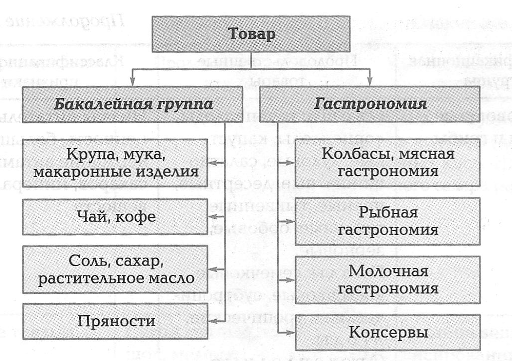

1.2. Товароведная характеристика продовольственных товаров
1.2.1. Классификация продовольственных товаров
Классификация продовольственных товаров — это распределение их на группы или классы по общим и наиболее характерным признакам.
Основные признаки классификации товаров следующие:
- происхождение товаров;
- химический состав;
- степень обработки сырья;
- назначение товаров.
Существует торговая классификация товаров, а именно:
- хлебобулочные изделия;
- кондитерские изделия;
- чай;
- кофе;
- соки;
- воды;
- вино-водочные изделия;
- плодоовощные товары;
- мясные товары;
- рыбные товары;
- молочные товары;
- табачные изделия.
Существует классификация, согласно которой выделяют две группы товаров: бакалейную и гастрономическую (рис. 1.6).
рис. 1.6

Применяемая в торговле классификация представлена в табл. 1.2.
| Таблица 1.2. Основная классификация продовольственных товаров | ||
|---|---|---|
| Классификационная группа | Продовольственные товары | Классификационные признаки |
| Зерномучные товары | Мука, крупа, крупяные изделия, макаронные изделия, хлебобулочные изделия | Высокое содержание углеводов |
| Плодоовощные товары и грибы | Ов ощи: клубнеплоды, корнеплоды, капустные, луковые, салатно-шпинатные, десертные, пряные, тыквенные, томатные, бобовые, зерновые. Плоды: семечковые, косточковые, субтропические и тропические. Ягоды. Орехоплодные. Грибы: белые, подберезовики, грузди, волнушки, опята, шампиньоны, трюфель, сморчок, строчок, вешенки | Низкая питательная ценность, большое содержание витаминов, сахаров, минеральных веществ |
| Вкусовые товары | Чай, кофе, пряности, вкусовые приправы, алкогольные, слабоалкогольные и безалкогольные напитки, табак и табачные изделия | Содержание веществ (кофеина, ванилина, эфирных масел, спирта этилового, никотина), действующих на нервную систему организма человека |
| Крахмал, сахар, мед и кондитерские товары | Фруктово-ягодные изделия, какао-порошок, шоколад, восточные сладости | Высокое содержание углеводов, высокая энергетическая ценность, хорошая усвояемость, но очень низкое содержание витаминов |
| Пищевые жиры | Растительные масла, животные жиры, маргарин, кулинарные жиры, коровье масло | Высокая питательная ценность: содержание жиров, жирорастворимых витаминов (провитамина А, витамина Е) |
| Молочные товары | Молоко, сливки, кисломолочные продукты, сыры, молочные консервы | Содержание всех необходимых и легко усвояемых веществ: белков (незаменимых аминокислот, казеина, аль-бумина, глобулина), молочного жира (более 20 жирных кислот), молочного сахара (лактозы) |
| Яичные товары | Сухой яичный порошок, меланж | Содержание веществ, сбалансированных и легко усвояемых организмом человека: белков, жиров, углеводов, минеральных веществ, витаминов групп B, PP |
| Мясные товары | Мясо домашней птицы, субпродукты, полуфабрикаты, консервы, колбасные изделия, копчености, кулинарные изделия | Высокая питательная ценность: источник полноценных белков, содержание жиров, минеральных, экстрактивных веществ |
| Рыбные товары | Икра, рыба: живая, охлажденная, мороженая, соленая, сушеная, вяленая, копченая; рыбные консервы, кулинарные изделия и полуфабрикаты | Ценные продукты питания: мясо рыбы содержит полноценные белки, экстрактивные вещества, жиры, витамины A, D, E, K, F, группы B, минеральные вещества, углеводы |
▲ НАВЕРХ ▲
► К следующему подразделу 1.2.2